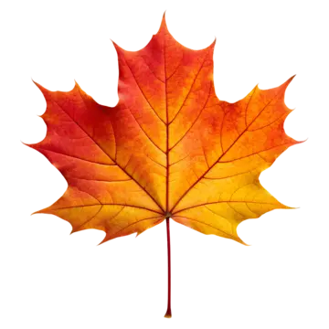
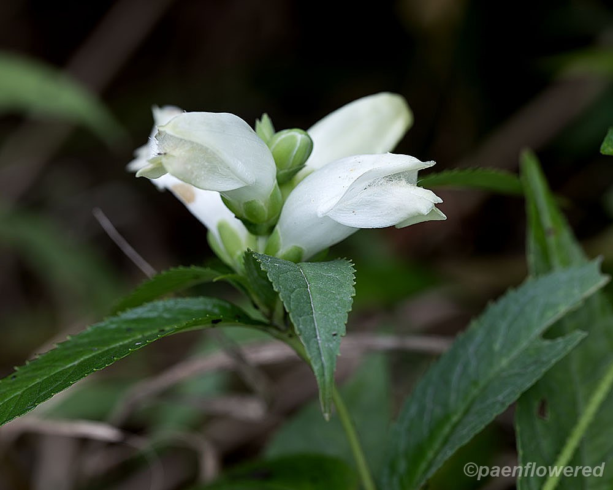
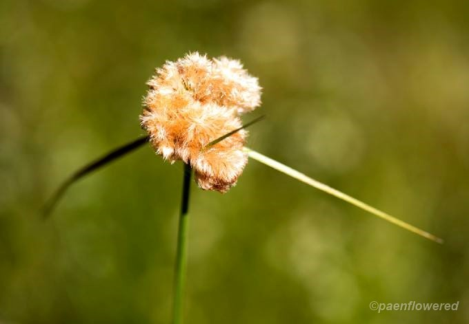

This is a red maple leaf. A common native tree found throughout Pennsylvania.
View Details
A native perennial wildflower with white, turtle-shaped flowers that bloom in late summer.
View Details
A wetland sedge with yellow-brown bristles that grows in bogs, swamps, and wet meadows.
View Details